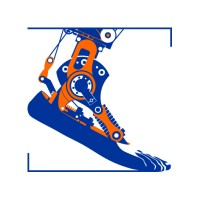
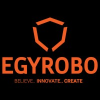
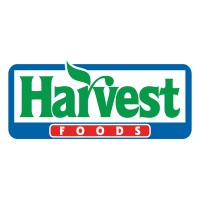
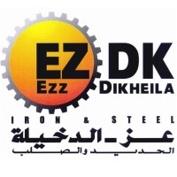

Industrial Internships
May 2025 - Jul 2025

Computer Vision and Robotics Research Intern
Brubotics - Vrije Universiteit Brussel (VUB), Brussels, Belgium
As part of a specialized research group including master's and PhD students in the robotics field, I contributed to a cutting-edge project focused on building an autonomous robot for indoor surface treatment using Robotics and AI. My role centered around advanced computer vision tasks.
Aug 2024 - Nov 2024

R&D Robotics Engineer
Egyrobo for robotic systems s.a.e, New Administrative City, Egypt
I worked on designing and manufacturing robots and smart devices, bringing them to a user-ready finish using FDM, FFF, and SLA 3D printers with multiple slicers, a 3D scanner, and CNC machines with SolidWorks CAM and Fusion 360.
Jul 2024 - Aug 2024

Mechatronics Engineering Intern
Elbawadi Harvest Foods, Alexandria, Egypt
I witnessed the Honey and jam production process - Directed to the Sesamum Boiler and tried to restart the process - Checked the Safety and Quality of the products and the workers on the line.
Aug 2023 - Sep 2023
Sensors & PLC Manitenance Engineer
Elwelely Group, Alexandria, Egypt
I am responsible for fixing the PLC connections of the Rice packaging line - metal detector calibration on the Sugar packaging line - inserting new inverters to include new production lines using Relays.
Jul 2023 - Aug 2023

Maintenance and Inspection Engineering Intern
EZDK, Alexandria, Egypt
I headed the Mechanical Systems maintenance team in the flat steel section - witnessed the reduction of the Iron and some modification till getting different steel composition - inspected the electric Arc Furnace, Continuous caster, Tunnel Furnace, Hot Rolling, Rolling workshops, Skin Pass, PKL factory, Chemicals Recycling factory, and Service Center (Cut to length and Slitting) - checked all of these details including hydraulic system tour and some long journey in the PLCs (Programmable Logic Controllers), HMI, and Scada.